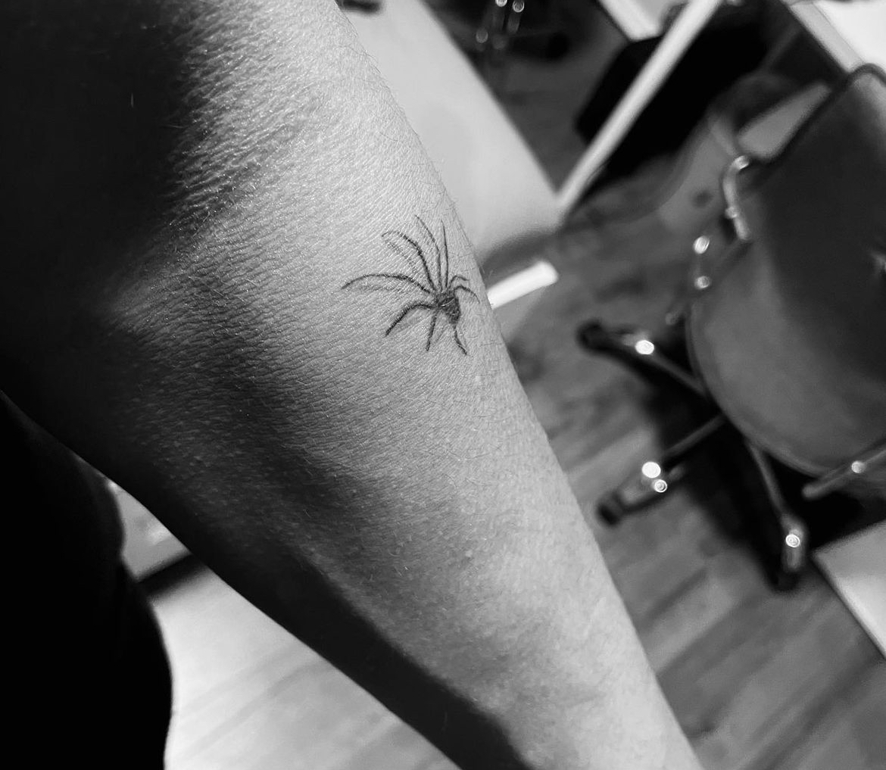
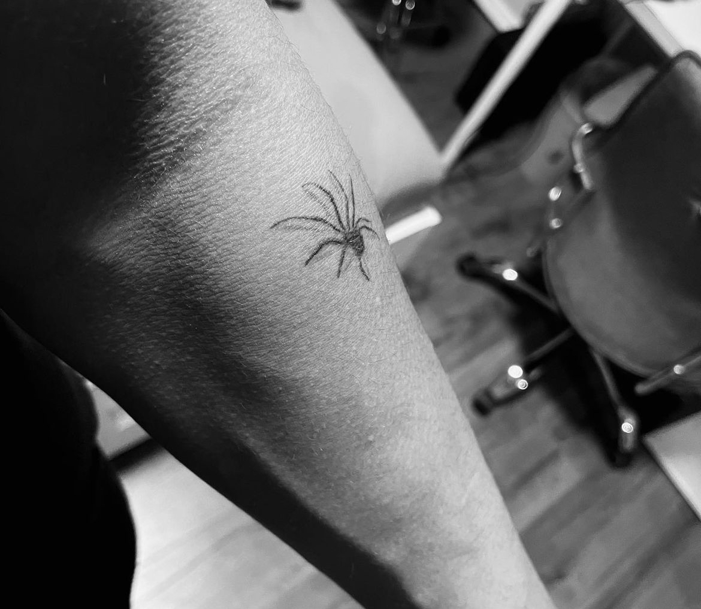

Tattoos / Art
I was always attracted by the idea of expressing yourself in art.
I never noticed how much of someone's personality and mindset are present in their creations.
When I got home, the first thing that I did was to visit the attic and search for my old drawings. I was sure my mom kept them somewhere. I started to draw
when I was in fourth grade. I wanted to see how my art changed over the years. I flipped through my old sketchbooks and realized how much I grew, from that
little boy who drew cartoons, into a young man who started to use art not only to draw things he liked but also as a way to express himself. I also noticed
how different events affected my craft.
Never really understanding my own mind, and especially not others, I saw how I changed as a person. From that time, I knew I would never look at anyone without
wondering what made them who they are. They were the art pieces and their lives were the artists. Each and every single person on my path was a unique creation
that needed to be understood. This is how art led me to my interest in tattoos.